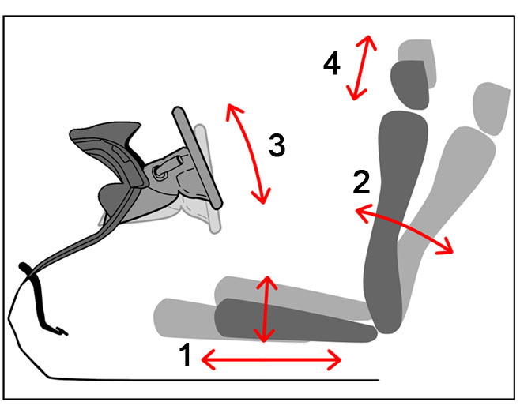
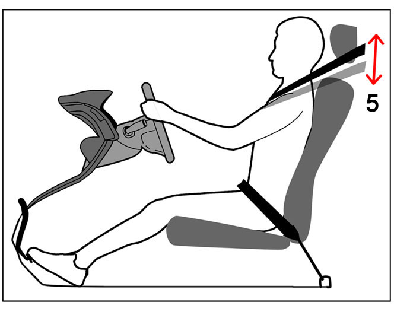
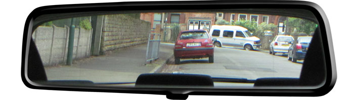
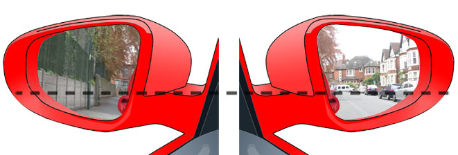

Doors
Check that all the doors are closed by:
- Checking the boot door before getting into the car.
- Checking the wing mirrors to see that the doors are flush.
- Shaking your door handle to see that it is firm.
- Referring to the dashboard in case a 'door open' warning light is illuminated .
Seat
(1) Move your seat forward or backwards and up or down to achieve a position where:
- With the clutch fully depressed, your left leg is extended but not overly stretched.
- You have a good view over the steering wheel.

Steering
Adjust the rake (angle) of your seat (2) and if need be, the angle of the steering column (3) so that your arms rest comfortably on the wheel at the nine and three position without being overly stretched or bent.
Adjust the headrest (4) so that it’s level with the top of your head and close to the back of it. It must be able to support your neck in case of an impact.

Seatbelt
Put on your seatbelt making sure it isn’t twisted by running your thumb under it.
Adjust the height of it if necessary (5) so that it runs across the top of your shoulder, not against your arm or neck.
Mirrors
It is important to adjust the mirrors lastly, once you are set into the seating position you will be driving from. If you need to re adjust your position later, you will need to check and re adjust the mirrors too.
Move the interior mirror so that you can see the top, bottom, left and right of the rear window.

Set the wing, (or side) mirrors so that the side of the car is just out of view. This will give you as broad a view as possible.

You should be able to see the horizon of the pavement and road about a third of the way up the mirrors.
Correct adjustment will prove invaluable, especially when you’re driving in lanes of traffic.
The wing (or side) mirrors are slightly convex to give the broadest view. This distorts the reflection a little, so that traffic looks further away.
The interior mirror is flat and shows a truer reflection.